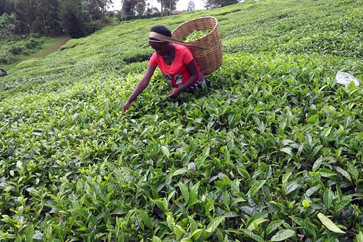
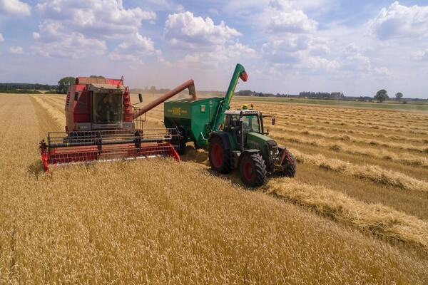

Kenya and U.S have agricultural based economies, but for very different reasons. While both countries farm to feed their populations and earn foreign exchange, Kenya relies on agriculture because she lacks the capacity to produced industrial goods. On the other hand, the U.S imports most of her industrial products because it is cheaper to produce them abroad.
Farming in Kenya, is mostly by hand. The country lacks the technical capabilities to make machinery locally and the costs of importation are prohibitive.
Agriculture in the U.S is highly mechanised.
| Country | Population | GDP 2019 | Agricultural Import/Export | Currency | Staple Food | Economy Rank in the World 2019 |
|---|---|---|---|---|---|---|
| USA | 330m | $21,427,100 million | Net food exporter | US Dollar | Wheat | 1 |
| Kenya | 50m | $99,246 million | Net food importer | Kenya Shilling | Maize | 62 |